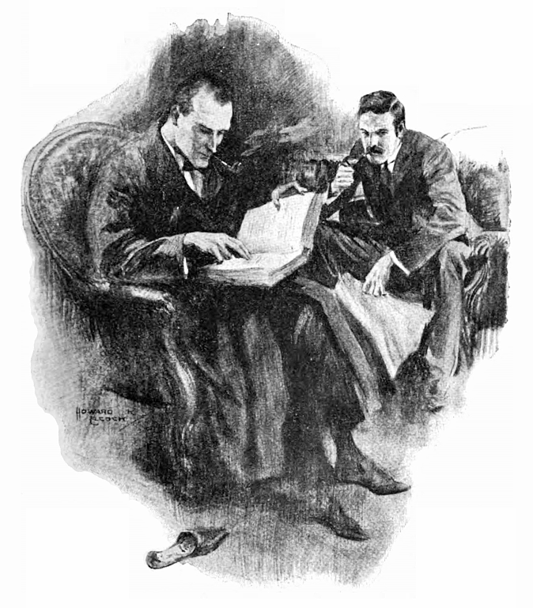
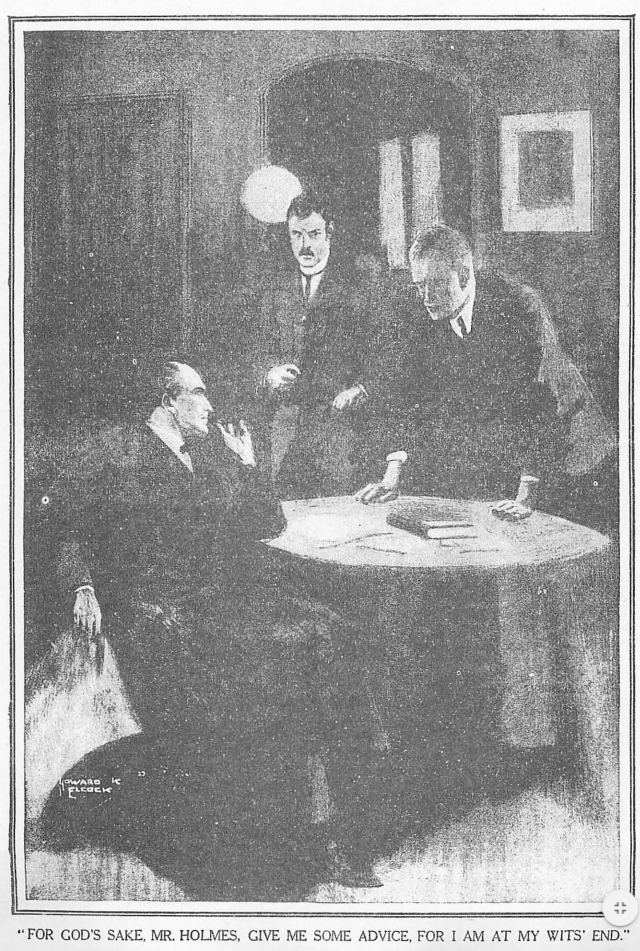
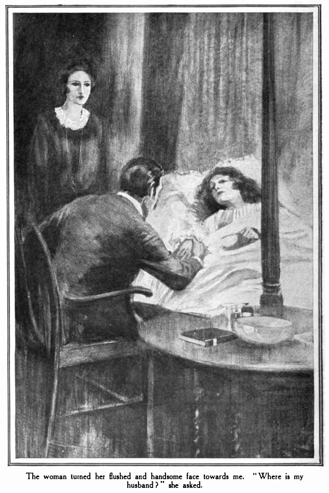

ホームズがつぶさに読んでいた手紙は、先刻届いたものだった。済むと、本人としては大笑いに等しいあのいつもの乾いた含み笑いをし、その紙を私に投げてよこす。
「現代と中世、現実と妄想の混ぜものとしては、思うにこれは極めつけだ。」と友人。「これをどう見るね、ワトソン？」
私が読んだ文面は次の通り。
オールド・ジューリ四六
一一月一九日
吸血鬼の件
拝啓
当社依頼人ロバート・ファーガソン氏（ミンシン横町 の紅茶卸ファーガソン＆ミュアヘッド経営者）より同日付の書簡にて当社へ吸血鬼に関して照会がございました。当社の専門は機械類査定に限られ、本件は取扱業務外となるため、貴殿をご訪問の上、ご依頼することを薦めた次第。当社はマティルダ・ブリッグス案件でのご活躍を記憶するものにて。
一一月一九日
吸血鬼の件
拝啓
当社依頼人ロバート・ファーガソン氏（ミンシン
敬具
モリソン＝モリソン＆ドッド ＥＪＣ拝
「マティルダ・ブリッグスとは妙齢の女の名ではないよ、ワトソン。」ホームズの声はなつかしむよう。「船だ、スマトラの巨大ネズミの関わりでね、この話はまだ世間に出すには早いが。とはいえ僕らが吸血鬼の何を知ると。僕らなら取扱業務内とでも？ 何であれ仕事がないよりましだが、まったく、グリム童話とでも向き合わされているようだ。手を伸ばしたまえ、ワトソン、Ｖの項目の確認だ。」
私は反り返って、ご注文たるいつもの大備忘録を手に取る。ホームズは片膝に上手く載せ、ゆっくりと愛おしむように目を過去の事件簿の上に滑らせた。積もり積もった生涯の見聞とも結びつくものだ。

「Ｖ……グローリア・スコット号の航海か。」と読み上げる友人。「あれはひどい事件だった。君も書き留めたね、懐かしい。ワトソン、出来たものは、僕としても褒められたものではないが。ヴィクタ・リンチ、偽造犯。毒トカゲ、別名ヒーラ。注目に値する案件、だ！ ヴィットーリア、サーカスの美女。ヴァンダビルト強盗団。毒蛇。ヴァイゴル、ハマースミスの怪異。ほお！ ほおお！ 昔なじみの備忘録。君以上の働きだ。さて傾聴せよ、ワトソン。ハンガリーの吸血鬼信仰。さらなるは、トランシルヴァニアの吸血鬼。」熱心に紙をめくるも、しばらく読み耽ったのち、その厚い冊子を当てが外れたとうなりつつ放り下ろす。
「ゴミだ、ワトソン、ゴミだ！ 僕らにどう対処しろと！ 心臓に杭を打たねば墓に鎮められぬ歩く死体なんぞ！ 愚かしいにもほどがある。」
「しかしだね。」と私。「吸血鬼も
「その通りだ、ワトソン。先ほどの資料にも伝説への言及はある。とはいえ、そのようなもの真面目に取り上げたものか。当事務所は現在足をしかと地につけて立っており、今後もそうあらねばならぬ。世の中とは僕らでも手に余る。
友人は二通目の手紙を取り上げる。一通目に取り組むあいだ見向きもされず卓上に置かれていたものだ。これに目を通し始めるや、友人の顔に楽しげな笑みが浮かび、次第に強い興味と本意気を示す表情へと移り変わる。読んだあとは座ったまま、指から手紙をぶら下げ思案に耽った。やがてはっとしたように物思いから目覚め、
「ランベリのチーズマン屋敷。ランベリの場所は、ワトソン？」
「サセックス州、ホーシャムの南だ。」
「そう遠くない、ね？ それからチーズマン屋敷とは。」
「私の知識によれば、ホームズ、その土地は古い館の多いところで、名は何世紀も前にそれらを建てた人々にちなんでいる。つまりオドリ屋敷なりハーヴィ屋敷なりキャリトン屋敷なり――まあ名前以外忘れられたかつての住人たちというわけだ。」
「当たり前だ。」とホームズの素気ない返事。いつものことだ、性格は高慢ちきで自分本位、脳内へ新情報を書き入れるのは迅速にして正確だが、仕入れ先にはたいていお礼の言葉もない。「何にせよランベリのチーズマン屋敷のことなど、片付く頃には嫌でもわかろう。差出人は期待通りロバート・ファーガソン。時に、当人は君と知り合いだとか。」
「私と！」
「読むがよかろう。」
友人から手紙を手渡される。冒頭には今引き合いの住所があった。
拝啓 ホームズ先生
得意先の弁護士より貴方様を紹介されましたが、実のところ本件は並外れて扱いづらく、ご相談しづらい問題なのです。私は代理人で、当事者は友人、この紳士は五年ほど前ペルー人女性と結婚しました。ペルーの商人のひとり娘で、硝酸肥料の輸入つながりで出逢ったのです。ご婦人は美人でしたが、異国の生まれであること、宗教が違うことから、いつも夫婦のあいだでは好き嫌いや気持ちのすれ違いが起こりまして、そのためしばらくするとご婦人への愛も冷め、一緒になったのは間違いだったと思うようになったらしく。彼からして、ご婦人の人となりに首をかしげるところがあったのです。なおさら痛ましいのは――ご婦人がどこから見ても男子一身の愛を捧げるに足る貞淑な人物であることであります。
さて要点につきましては、お伺いの際に明らかにするつもりです。正直のところ、この手紙は単に現状の概略をお伝えし、この件にご関心を持って頂けるか確認するためのものです。ご婦人はその優しく穏やかな気立てには、きわめて不釣り合いな、おかしな素振りを見せ始めたのです。紳士の結婚は二度目で、先妻とのあいだ息子がひとりおります。この子はもう一五で大変愛らしく優しい男の子ですが、不運にも幼い頃の事故で障害がありました。また、まったくいわれのない理由で、かわいそうにその子が今の妻に手を上げられたのが、二度目撃されております。一度などは鞭で打ち据えられたため、腕がみみず腫れになったほどです。
このことでさえ、実の子に取った仕打ちに比べれば些細なことです。まだ一歳にも満たない可愛いお子さんなのに、一ヶ月ほど前のあるときのことです。乳母が数分この子から離れたすきに、痛みにうめく声があって、あわてて戻った乳母が部屋に飛び込んで目にしたのは、赤ん坊に覆い被さって、どうやら首筋に噛みついている様子の雇い主のご婦人です。首には小さな傷があり、そこから血の筋が垂れていました。ぞっとするあまり乳母は旦那様を呼ぼうとしましたが、ご婦人にやめてくれとせがまれ、何と口止め料として五ポンド渡されたそうです。言い訳は全くなく、その場は事が流されました。
とはいえ、ひどく心残りだった乳母は、そのとき以来、奥様の動きに気を付け、情もあって赤ん坊をより近くから見張ることにしました。すると、こちらが見張っているときには、向こうからも見張られている気がして、さらに赤ん坊をひとりにしておくしかないときなどは、毎回手を出そうと待ち構えているというではありませんか。昼に夜に乳母が子どもを守り、昼に夜に母親が静かに監視しながら、羊を待つ狼のごとく待ち伏せていると。先生にはまったく途方もないことに思われましょうが、それでも取り合って下さいますようお願いします。ひとりの子どもの命と、ひとりの男の正気がかかっております。
ついに来るある日、恐ろしいことに、旦那様にも事が露見してしまいました。もはや気が気でない乳母が、緊張に耐えられず、一切の胸のうちをぶちまけたのです。彼には突飛な話に思えましたし、今の貴方様とて同じでしょう。自分の知る奥様は愛の深い妻、義理の息子に手を上げることを除いては、情のある母親です。その女がどうして愛しい実の子を傷つけましょうか。乳母に告げます。お前は夢でも見ているのか、そんな疑いは馬鹿馬鹿しいにもほどがある、雇い主へのかくなる侮辱は到底許され得ない、と。ところが話の最中に、いきなり痛みに泣きじゃくる声が聞こえてきます。乳母と主人はふたり子ども部屋に駆け込みました。そのときの心境お察し下さい、ホームズ先生。何と彼の目の前で、奥様が乳児用寝台のわき、膝を突いた状態から立ち上がり、そしてむき出しになった子どもの首と敷布には、血があったとか。悲鳴を上げて、奥様の顔を光に当てると、唇のあたりは血にまみれておったそうで。彼女が――まさしく彼女本人が――かわいそうに、赤子の血を飲んだのです。
これが事の次第です。ご婦人は自室に閉じこもりましたが、やはり言い訳ひとつもございません。旦那様は気も狂わんばかりです。彼も私も吸血鬼信仰については言葉以上のことは存じません。国の外の突飛な作り話ほどに思っておりました。それなのに、ここイングランドはサセックスのただなかで――いえ、このことはみな明朝ご相談できればと存じます。お会い頂けますか。取り乱した男のお力になって下さいますか。受けて頂けるなら、どうかランベリはチーズマン屋敷のファーガソンまでご電報を。明朝一〇時までにはお伺いする所存。
得意先の弁護士より貴方様を紹介されましたが、実のところ本件は並外れて扱いづらく、ご相談しづらい問題なのです。私は代理人で、当事者は友人、この紳士は五年ほど前ペルー人女性と結婚しました。ペルーの商人のひとり娘で、硝酸肥料の輸入つながりで出逢ったのです。ご婦人は美人でしたが、異国の生まれであること、宗教が違うことから、いつも夫婦のあいだでは好き嫌いや気持ちのすれ違いが起こりまして、そのためしばらくするとご婦人への愛も冷め、一緒になったのは間違いだったと思うようになったらしく。彼からして、ご婦人の人となりに首をかしげるところがあったのです。なおさら痛ましいのは――ご婦人がどこから見ても男子一身の愛を捧げるに足る貞淑な人物であることであります。
さて要点につきましては、お伺いの際に明らかにするつもりです。正直のところ、この手紙は単に現状の概略をお伝えし、この件にご関心を持って頂けるか確認するためのものです。ご婦人はその優しく穏やかな気立てには、きわめて不釣り合いな、おかしな素振りを見せ始めたのです。紳士の結婚は二度目で、先妻とのあいだ息子がひとりおります。この子はもう一五で大変愛らしく優しい男の子ですが、不運にも幼い頃の事故で障害がありました。また、まったくいわれのない理由で、かわいそうにその子が今の妻に手を上げられたのが、二度目撃されております。一度などは鞭で打ち据えられたため、腕がみみず腫れになったほどです。
このことでさえ、実の子に取った仕打ちに比べれば些細なことです。まだ一歳にも満たない可愛いお子さんなのに、一ヶ月ほど前のあるときのことです。乳母が数分この子から離れたすきに、痛みにうめく声があって、あわてて戻った乳母が部屋に飛び込んで目にしたのは、赤ん坊に覆い被さって、どうやら首筋に噛みついている様子の雇い主のご婦人です。首には小さな傷があり、そこから血の筋が垂れていました。ぞっとするあまり乳母は旦那様を呼ぼうとしましたが、ご婦人にやめてくれとせがまれ、何と口止め料として五ポンド渡されたそうです。言い訳は全くなく、その場は事が流されました。
とはいえ、ひどく心残りだった乳母は、そのとき以来、奥様の動きに気を付け、情もあって赤ん坊をより近くから見張ることにしました。すると、こちらが見張っているときには、向こうからも見張られている気がして、さらに赤ん坊をひとりにしておくしかないときなどは、毎回手を出そうと待ち構えているというではありませんか。昼に夜に乳母が子どもを守り、昼に夜に母親が静かに監視しながら、羊を待つ狼のごとく待ち伏せていると。先生にはまったく途方もないことに思われましょうが、それでも取り合って下さいますようお願いします。ひとりの子どもの命と、ひとりの男の正気がかかっております。
ついに来るある日、恐ろしいことに、旦那様にも事が露見してしまいました。もはや気が気でない乳母が、緊張に耐えられず、一切の胸のうちをぶちまけたのです。彼には突飛な話に思えましたし、今の貴方様とて同じでしょう。自分の知る奥様は愛の深い妻、義理の息子に手を上げることを除いては、情のある母親です。その女がどうして愛しい実の子を傷つけましょうか。乳母に告げます。お前は夢でも見ているのか、そんな疑いは馬鹿馬鹿しいにもほどがある、雇い主へのかくなる侮辱は到底許され得ない、と。ところが話の最中に、いきなり痛みに泣きじゃくる声が聞こえてきます。乳母と主人はふたり子ども部屋に駆け込みました。そのときの心境お察し下さい、ホームズ先生。何と彼の目の前で、奥様が乳児用寝台のわき、膝を突いた状態から立ち上がり、そしてむき出しになった子どもの首と敷布には、血があったとか。悲鳴を上げて、奥様の顔を光に当てると、唇のあたりは血にまみれておったそうで。彼女が――まさしく彼女本人が――かわいそうに、赤子の血を飲んだのです。
これが事の次第です。ご婦人は自室に閉じこもりましたが、やはり言い訳ひとつもございません。旦那様は気も狂わんばかりです。彼も私も吸血鬼信仰については言葉以上のことは存じません。国の外の突飛な作り話ほどに思っておりました。それなのに、ここイングランドはサセックスのただなかで――いえ、このことはみな明朝ご相談できればと存じます。お会い頂けますか。取り乱した男のお力になって下さいますか。受けて頂けるなら、どうかランベリはチーズマン屋敷のファーガソンまでご電報を。明朝一〇時までにはお伺いする所存。
敬具 ロバート・ファーガソン
追伸 確かご友人のワトソンはブラックヒースでラグビーをされていたかと。そのとき私はリッチモンドのスリークォーターでした。申し上げられる自己紹介はこれくらいしかございません。
「もちろん覚えているとも。」と言いながら私は手紙を下に置く。「でかボブ・ファーガソン、歴代でもリッチモンド一のスリークォーターだ。いつもお人好しのやつだったから、こうして友人の事件に首を突っ込むなど、あいつらしいな。」
ホームズは感慨深げに私を見据えると、首を振った。
「君は底知れないね、ワトソン。君にはまだ秘めたる可能性がある。文面の書き取りをよろしく。『貴君の案件喜んで調査する所存。』」
「貴君とな！」
「当事務所がぼんくらの巣と思われては困る。むろん差出人本人が当事者だ。その電報を送りたまえ、あとは朝まで寝かしておこう。」
時間通り明朝一〇時、ファーガソンが我々の部屋に乗り込んできた。私の記憶では、ひょろ長い身体に手足をぶらりと提げ、身のこなし素早く敵のバックスをかわす男だった。まさか全盛期は一流で知られた選手の無様な姿を見ることになろうとは、これほど痛ましいことはない。大柄の体格も崩れ、亜麻色の髪も薄くなり、肩も垂れている。とはいえ私も相手に同じ想いを抱かせたはずだ。
「やあやあワトソン。」という彼の声は、変わらず太く、心のこもったものだった。「さすがにあのときの君とはいかないか、ほら君をロープの向こう、旧鹿苑の観衆のなかへ投げ込んだろ。こっちもちょっとは変わったが、この一日二日でめっきり老けてね。電報によればどうも、ホームズ先生、代理人のふりは無駄だったようで。」
「直の方が話が早い。」とホームズ。
「その通りです。とはいえ考えてもみてください、難しいですよ、自分が守り助ける義務のある女性のことを訴えるなんて。僕に何が。こんな話を警察に持ち込むなんてとても。それに子どもたちも守らねば。狂気ですか、ホームズ先生。血筋が何か？ 似たような案件のご経験は？ お願いです、ご助言を。もう途方に暮れて。」

「ごもっともです、ファーガソンさん。さあお座りに、落ち着いて、いくつか質問にご回答を。僕が途方に暮れるまではまだまだ時間も充分、僕らで何かしらの解決策を必ずやお見つけ差し上げます。まずは、すでになさった対処について。御前様は今もお子様のおそばに？」
「あれはすさまじい光景でした。実に情の深い女性なのです、ホームズ先生。女から男への全身全霊の愛ということなら、むろんあるわけで。本人も心から苦しんでいます、このおぞましい、この信じがたい秘密を私に知られたことで。口も開かず、責めても返す言葉もなく、ただ私をじっと見つめ、その瞳は取り乱し打ち拉がれたかのようで。そのあと自分の部屋へ駆け込み、閉じこもりました。以来、顔も合わせてくれず。彼女には結婚前からそば付きの女中がおりまして、名をドローレス――召使いというより友人です。食べ物はその者が運んで。」
「ならばその子に差し迫った危険はないと？」
「メイソンおばさん、乳母が夜も昼も絶対離れないと。私も信頼しきっております。ひとつ不安があるとすれば、幼いジャックのことで。かわいそうに、手紙でも申し上げましたが、二度手荒いことをされていて。」
「だが怪我はない？」
「ええ、打ち据えただけですから。身体の不自由な、害のない子だけに、不憫で。」ファーガソンのやつれた顔も、この少年の話をするときはほころんだ。「この子の有様を観たら誰だって心和らぐとご納得に。幼い頃、高いところから落ちて脊椎を痛めまして、ホームズ先生。けれども情の深い愛しい子なのです。」
ホームズは昨日の手紙を拾い上げて読み始める。「お屋敷にそのほか住み込みは、ファーガソンさん？」
「最近入った召使いがふたり。馬番がひとり、このマイケルも屋敷で寝起きを。家内に私、息子のジャックに赤ん坊、ドローレス、あとメイソンおばさんで、全員です。」
「となると、結婚の時点では御前様のことをよくご存じではなかった。」
「知り合ってほんの数週間後で。」
「女中のドローレスと御前様はどれくらいご一緒に？」
「数年は。」
「でしたら御前様の人となりはあなたよりドローレスの方がよくご存じ。」
「はい、その通りかと。」
ホームズは書き留める。
「思うに、ここよりランベリにいた方が僕もお役に立てるかと。案件の出来からして、自ら調べるべきです。ご婦人がまだお部屋なら、出向いてもお邪魔にもご迷惑にもなりますまい。むろん僕らは宿を別に取ります。」
ファーガソンはほっとした素振り。
「願ったり叶ったりです、ホームズ先生。お越しならヴィクトリア駅二時発にうってつけの列車が。」
「もちろん伺います。さしあたり暇もありますから、これのみに全力を。ワトソン、むろん一緒に来ること。しかし発つ前にひとつふたつ確認したい点が。この問題のご婦人、聞く限り実の子、あなたの連れ子、どちらの子にも手をお上げのようですが。」
「そうですよ。」
「ところが手の上げ方は違っている、そうですね？ あなたの連れ子には叩くだけ。」
「一度は鞭で、もう一度は手でしたたかに。」
「なぜぶったのか本人の弁解はなく？」
「ただただ憎しみからです。本人も何度もそう口に。」
「ふむ、継母としてはなくはありません。先妻への嫉妬、と申しましょうか。ご婦人はもとより嫉妬深い？」
「ええ、大変やきもちで――南国生まれの激情がなせるわざです。」
「しかし少年――確か一五で、おそらくは知恵はかなりついている。身体を動かすのは限度があるだけに。彼は手を上げられたことに一言も？」
「ええ、ただ訳が分からないとだけ。」
「ふたりには、仲が良いときも？」
「いえ、お互い愛情なんてとても。」
「しかしお話では彼は情が深いと。」
「あれほど親になつく息子はそうおりません。何でも私の真似をして、わたしの言葉ふるまいを追いかけて。」
再びホームズは書き留め、座ったまましばらく物思いに耽る。
「なるほど、あなたとお子さんは再婚まで大親友と。もはや同志にも似たものであったのでは？」
「そりゃあもう。」
「では、その情が深いというお子さんなら、きっと実の母の思い出も大切に。」
「ひたむきなほどに。」
「確かにたいへん興味深いお子さんかと。さて手を上げた件でもうひとつ。赤子への奇行と、連れ子へ手を上げたこと、これらは同時期のことでは？」
「初回はそうです。妙な考えにでも取り憑かれたのか、どちらにも怒りを露わに。二回目の被害はジャックだけです。メイソンおばさんから赤ん坊については何も聞いてません。」
「いかにも込み入ってきた。」
「まったくついていけないのですが、ホームズ先生。」
「そうでしょうとも。人とは仮説を立てた上で、時を待つか、それを論破する十二分の情報を待つかするもの。悪い癖です、ファーガソンさん。しかし本来の人間とは弱いもの。遺憾ながらここにいるわが親友は、僕の科学的手法を大げさに見ておりまして。とはいえ当座はこう言っておきます。この件、僕には不可解とも思えません。それでは二時ヴィクトリア駅でお目に掛かりましょう。」
曇りで霧も深い一一月の夕べのこと、ランベリの宿チェカーズに荷を預け、我々は馬車で、曲がりくねった長いサセックスの泥道を抜け、ようやくファーガソンの住む、周囲に何もない古い地主屋敷へと辿り着く。大きいがまとまりのない建物で、中央の本館は古いが、両翼は新しくテューダー様式の煙突がいくつもそびえ、こけむしたホーシャム板の尖り屋根がついている。戸口は角が丸くすり減り、張り出し玄関を縁取る古い瓦には、元の建築主にあやかってチーズと人の判じ絵紋が記されていた。内部は、波打つ天井ががっしりした楢の梁に支えられ、床はたわんで反り返っているため平らでない。年月と老朽からくる匂いが、崩れかかった建物全体に充溢していた。
さて中央の大広間へファーガソンの案内で入る。ここでは、奥に一六七〇年とある、鉄柵付きの大暖炉のうちで、立派な薪の火が音を立てて燃えていた。
その部屋をぐるりと見回すと、時代・場所様々なものの入り乱れ方が実におかしい。壁半分、
「おや！ おや！」とそのとき声。
スパニエル犬が一匹、隅のかごで横になっていた。のろのろと主人へと近づくが、うまく歩けていない。後ろ足の動きが不自然で、尾は床についたままだ。ファーガソンの手をなめる。
「どうしました、ホームズ先生？」
「この犬、どこか具合でも？」
「それが獣医も頭を痛めてまして。麻痺の一種で、脊髄膜炎だとか。まあ治まりつつあるので、じきに治るでしょう――だな、カーロ？」
そうだとばかりに垂れた尾がふるえる。犬は悲しげな目で我々を順に見やった。自分の話だとわかっているようだ。
「症状は急に？」
「一晩を境に。」
「いつ頃から？」
「四ヶ月ほど前です。」
「目に付く。やはり裏がある。」
「裏って何です、ホームズ先生？」
「想定済みのことを確かめたまで。」
「お願いです、どういうことです、ホームズ先生？ 先生にはほんの知的なパズルかもしれませんが、私には生きるか死ぬかなんです！ 家内が殺人鬼になるかもしれない――息子は今も危険なんです！ もてあそばずに、ホームズ先生、事は深刻なんですよ。」
大柄な元ラグビー選手は全身をふるわせている。ホームズは落ち着かせようと手を相手の腕に置いた。
「僕はね、ファーガソンさん、何であれ解決そのものがあなたの苦しみになるやもと心配で。全力でお救いする所存。さしあたり申し上げられるのはこれのみですが、この館を発つ前にははっきりとした事もつかめるかと。」
「本当にお願いしますよ！ すいませんが、みなさん、私は家内の部屋へ行って、変わりないか確かめなくては。」
依頼人が数分不在のあいだ、ホームズは再び壁の珍しい品々を調べ出す。やがて戻ってきた屋敷の主人だったが、思わしくない顔を見せたので、進展がなかったに違いない。ただ連れてきた人物がひとり、長身細身の小麦肌の娘だ。ファーガソンは言う。
「お茶の支度はできている、ドローレス。ご主人に不自由のないよう頼む。」
「あの方、具合、悪い。」と声を上げる娘は、屋敷の主人を責めるような目で見つめていた。「何も、食べない、言う。具合、悪い。医者、見せる。ふたりだけ、医者いない、わたし、怖い。」
ファーガソンが私の方へ、何か訴えるように目を向ける。
「私なんぞで何かお役に立てますかな。」
「ご主人さまは、医者に会ってくれるのか？」
「わたし、連れてく。ほっとけない。医者、見せる。」
「では君とすぐさま出向くとしよう。」
私はその娘についていった。その子は感情の高ぶるあまりふるえていた。階段をのぼり、古い廊下を奥へ。突き当たりに鉄のかすがいがついた大扉があった。これでは、さしものファーガソンでも妻のところへたやすくは押し入れない、本人もそのことに気づいただろう。娘が懐から鍵を取り出すと、厚く重い楢板が蝶番をきしませる。私が入室すると、うしろから娘も滑り込み、後ろ手に扉の錠をかける。
寝台に横たわっている女性が高熱なのは間違いない。意識は朦朧としていたが、私がお邪魔すると、怯えつつも美しい両の瞳をあげて、不安げにこちらをにらむ。見知らぬ人物とわかってどうもほっとしたのか、ため息をついてまた枕に頭を沈める。励ましの言葉をかけながら近寄るも、じっとして動かないので、そのあいだに脈と熱を測った。どちらも
「こんな調子、一日、二日。心配、死ぬ？」と娘。
その女性は火照った端正な顔を私に向ける。

「夫はどこ？」
「下で会いたがっていると思います。」
「わたしは会いたくない、会うものですか。」ところがそのあとうなされて話がそれる。「鬼！ 悪魔！ あの悪魔、どうすれば！」
「何かしてほしいことは？」
「ない、誰も何もできない。終わり。みんな破滅。何をしても、破滅なの。」
そのご婦人は妙な妄想にとりつかれたに相違ない。あの正直者のボブ・ファーガソンの人となりから、鬼や悪魔は見えそうにない。
「奥様、旦那様は心からあなたをお愛しです。こんなことになって深く悲しんでおいでです。」
再びその女性は私にその見事な瞳を向ける。
「わたしを愛している。ええ。でもわたしがあの人を？ 愛してないとでも？ あの人の心が砕けるくらいなら、わたしは犠牲になったっていい。それほど愛してるのに。それなのに、わたしのことを、あんなふうに、思うなんて――言うなんて。」
「嘆いておいでですが、訳が分からないのです。」
「ええ、そうでしょう。でも信じてさえくれれば。」
「会いたくはない？」と私が持ち出しても。
「ええ、ええ。あんな恐ろしい言葉、あんな形相、忘れられません。会いません。出てって。何もしていただかなくて結構。ひとつだけ伝えて。わたしの子どもを返して。生みの親はわたし。あの人に言えるのはそれだけ。」顔を壁に向けた女性は、それ以上は口を閉ざした。
私が階下の部屋へと引き返すと、ファーガソンとホームズはそのまま炉辺で座っていた。上でのやりとりのあらましを聞くファーガソンは、いかにも不機嫌だった。
「あの女に子どもを渡せるもんか。また妙な気を起こされるか、知れたもんじゃない。焼き付いて離れない、あの子のわきから、口を血塗れにして立ち上がったあの姿！」思い出してぞっとする依頼人。「子どもはメイソンさんに預ければ大丈夫、そのままにしておくべきだ。」
細身の女中は、この屋敷内で目にした唯一今風のものだが、その人物が茶を運んできた。給仕している最中に、扉が開いて少年がひとり部屋に入ってくる。目を引く子で、青白い顔に金髪、感じやすい水色の瞳が突如として情念の炎に燃えたのは、それが父親に注がれたときだった。駆け寄ったその子は、腕を父の首に回す。恋に恋する乙女が気のままにするように。
「ああ、パパン。」と声を張る。「まだ帰ってないって思ってた。会えるんなら待ってればよかった。でもお顔見れて嬉しい！」
ゆっくりとその抱擁をほどくファーガソンは、いささか戸惑っているようだった。
「いい子だねえ。」と心のこもった手でその亜麻色の頭をなでる。「早めに帰ってきたのは、友だちのホームズ先生とワトソン博士を口説いて、午後をこちらでご一緒してもらうことになったからなんだ。」
「その人がホームズ先生、探偵の？」
「ああ。」
少年は我々を穴の開くほど見つめたが、どうも私には敵をにらんでいるかのように感じられた。
「もうひとりのお子さんは、ファーガソンさん？」と訊ねるホームズ。「ご令息とお近づきになっても？」
「メイソンさんに赤ん坊を連れてきなさいと。」とファーガソン。少年は出ていくとき妙にぎこちない走り方をしたが、外科的な目には、背骨を痛めているせいだとわかる。まもなく帰ってくると、その後ろから背の高いやつれた女性がやってきた。腕に抱かれていたのはたいへん美しい赤子、黒目で金髪、サクソンとラテンの見事な融合だった。ファーガソンが首ったけなのはまるわかりだ。腕に抱えると、愛おしむようになで回したのだ。
「この子を傷つけようとするやつがいると思うと。」とつぶやきながら目を下ろしたその先は天使の喉、そこに小さく腫れた赤い痕があった。

まさにこの瞬間、たまたまホームズに目をやると、その表情はなぜかひどく張りつめていた。こわばる様はさながら古い大理石の彫刻のようで、父子に刹那視線を注いだが、すぐさま食い入るように部屋の反対側の何かを見つめる。その先を追いかけると、どうも窓越しに雫落ちるわびしい庭を見ているとしか思えない。なるほど鎧戸は外に半開きで、眺めも遮られているのに、にもかかわらずホームズが意識を集中させているその先は、紛れもなく窓なのである。そのあとほほえむと、また目を赤子へと戻した。丸い首には小さな腫れ痕。物も言わずホームズは、注意深くあらためる。最後に、前で振られていた赤子の丸くなった手と握手をした。
「ごきげんよう、坊や。君の人生は不思議な始まり方をしてしまった。乳母は君か、できれば内々に少々話をしたいのだが。」
友人は乳母をわきへ連れていき、数分立ち入った話をしたようだ。聞き取れたのは最後の切れ端だけで、こうだった。「君の心配事はおそらく、まもなく解決される。」乳母は無口で気難しい類の人物らしいが、赤子を連れて引き下がった。
「メイソンさんはいかなる人物で？」と訊ねるホームズ。
「ご覧の通り、愛想はいまいちですが、心は純粋、子どものためを思ってます。」
「君はあの人好きか、ジャック？」いきなりホームズは少年の方を向く。そのころころ表情の変わる顔がさっと曇り、首が振られる。
「ジャッキーは好き嫌いが激しくて。」とファーガソンは少年に腕を回す。「幸い、私は好きの方ですが。」
少年は喉を鳴らして、父親の胸に頭を埋める。ファーガソンはゆっくりそれをほどく。
「あっちへお行き、ジャッキー。」と言って、姿を消すまで温かい目で息子を見送る。「さてホームズ先生。」と少年が去ると話の続きだ。「正直のところ、あなたに無駄足を踏ませてしまったかもしれません。同情以外何をしていただけましょう。あなたの目から見てもさぞや扱いがたく、ややこしい案件でしょう。」
「確かに扱いがたい。」と友人は楽しげなほほえみを見せる。「ですが今のところ、ややこしいところに出くわしては。これは一貫して、知性による演繹の対象。大量にある個々の事象からひとつひとつ、初めに行った演繹の裏付けがとれていく、そうしてこそ主観は客観となり、自信を持って目的地に着けたと言えましょう。実際ベイカー街を発つ以前に僕は辿り着いていましたから、残るはただ観察と確認のみ。」
ファーガソンはその大きな手を、皺寄った額に当てる。
「頼みますからホームズ先生。」と声もかすれがすれ。「この件の真相がわかっているなら、私を宙ぶらりんのまま放っとかんでください。もう無理です。何をすれば。筋道はどうでもいいんです、あなたが本当に答えを見つけさえしたんなら。」
「むろん僕にはあなたへ説明する義務があり、じきに致します。しかし僕の流儀で案件を取り扱うことお許し願いたい。ご婦人との面会は叶うかな、ワトソン？」
「具合は悪いが、頭の方ははっきりしておる。」
「結構。彼女が立ち会って初めて事が片付く。さあ上の部屋へ。」
「私とは会いたくなかろう。」と声を張るファーガソン。
「そうでしょうとも。」とホームズは一枚の紙に数行走り書きをする。「ともかく君は立ち入りを許されている。ワトソン、この
私は再び昇り、私から言伝を渡されたドローレスが慎重に扉を開ける。一分して聞こえてきたのは、室内からの嗚咽で、そこには喜びと驚きが入り交じっていた。ドローレスが顔を出して、
「会いたい、言う。聞きたい、言う。」
呼びつけると、ファーガソンとホームズも上がってきた。我々が入室し、ファーガソンは一、二歩妻へと歩み寄る。ご婦人は寝台の上で身体を起こしていたが、手を突き出して相手を押しとどめた。依頼人は肘掛け椅子に座り込み、かたやホームズはご婦人に挨拶したあと、依頼人のわきに腰掛ける。ご婦人は驚きのあまり目を見開いていた。
「ドローレスに外してもらっても大丈夫かと。」とホームズ。「ああ結構です、マダム。あなたがいてほしいと望むなら異存ありません。さてファーガソンさん、僕も引く手あまたのせわしい身、やり口は単刀直入を旨としております。手術素早いほど痛み少なし。まずあなたの心落ち着くことから申し上げたい。御前様は実に善良で愛情深い女性で、現在不当な扱いを受けております。」
ファーガソンは喜びの声とともに身を起こす。
「ご証明を、ホームズ先生。そうすればいつまでも恩に着ますよ。」
「そうしたいのですが、そうすれば、あなたを別の角度から深く傷つけることに。」
「家内を潔白にして下さるのなら、そんなことどうでも。これに比べれば地球上のあらゆるものも下らんです。」
「では言わせて頂きますが、この一連の推理はベイカー街で頭によぎったもの。吸血鬼なる考えは僕には荒唐無稽。イングランドでもそのような犯罪例は実際にない。とはいえあなたの見たことは精密。あなたの目に映ったこのご婦人は、乳児用の寝台のわきから身を起こしたとき、口が血まみれだったと。」
「はい。」
「そのとき思い浮かばなかったのですか？ 血の流れるその傷跡、吸われたのは何か別の理由からで、血を飲むためではなかったのではと。イングランド史にも女王がひとりいませんか、その種の傷から毒を吸い出した人物が。」
「毒！」
「南米のご家庭。目で見るより先に、壁に武器があるのではと直感を。他の毒の可能性もあれ、思い当たったのはそれ。伺うと
そしてあの犬！ 人があのような毒を使うとなれば、まずその効力が切れてないか確かめるため、試してみませんか。犬のことは予見できなかったといえ、少なくとも見ればわかります。解釈にも符号していました。
もうおわかりですね。御前様はこういった攻撃を恐れていたのです。その現場を目にして子どもの命は救えたものの、ただあなたに事の真相をなかなか言い出せない。というのも、あなたの連れ子への愛の深さは重々承知、そのことであなたの心を傷つけては思ったのです。」
「ジャッキー！」
「先刻あなたが赤子を抱えたとき、僕の目は彼にありました。顔がくっきりと、鎧戸を後ろにした窓硝子に映ったのです。見えたのは、すさまじい嫉妬、すさまじい憎悪、あのようなもの、僕とて人の顔にそう見たことがない。」
「おおジャッキー！」
「向き合わねばなりません、ファーガソンさん。それがあなたへの歪んだ愛、狂おしいまでに肥大した愛であるだけに、いっそう苦しいものです。おそらくは亡き母への愛もその行動へ駆り立てた。彼のその魂は、あの素敵な赤子への憎しみの虜。かたや健やかで美しいのに、自分ときたらひ弱で正反対。」
「おお主よ！ 信じられん！」
「僕の話で合ってますか、マダム？」
ご婦人はすすり泣いており、顔を枕に埋めていた。さて旦那の方へ向き直り、
「どういえばよかったのか、ボブ。きっとあなたの痛手になるって。こらえて、わたし以外の誰かから伝えてもらった方がいいって。この魔法の力か何かをお持ちの紳士が、すべてご存じと知らせてくださったとき、ほっとして。」
「思うに、ジャッキー坊ちゃまへの処方としましては、一年間の海上生活が相応かと。」と椅子から腰を上げつつホームズは言う。「ただひとついまだおぼろげなことが、マダム。ジャッキー坊ちゃまに手を上げた件は今や明々白々。母親としての我慢にも限度が。しかしこの二日お子さんをよく手放せましたね。」
「メイソンさんには打ち明けて、ご存じで。」
「まさしく想像の通り。」
ファーガソンは寝台のかたわらで立ち尽くし、息も荒く震えながらも手を伸ばす。
「そろそろお暇する時間かな、ワトソン。」とホームズのささやき声。「君があの気の利かないドローレスの肘を取るというのなら、僕ももう片方を取ろう。ほら、よし。」そして後ろ手に扉を閉めながらもう一言。「思うに、あとのことは本人らに任せたがよかろう。」
私がこの件について付け加えることはあとひとつだけ。それはホームズが、この物語の発端に対して、締めとして書いた返事だ。中身はかくのごとし。
ベイカー街
一一月二一日
吸血鬼の件
拝復
一九日付のご来信について、当方、貴社依頼人ロバート・ファーガソン氏（ミンシン横町の紅茶卸ファーガソン＆ミュアヘッド経営）の調査を請け負い、案件を無事解決したことを恐れながらここに申し上げます。このたびのご推薦恐悦至極。
一一月二一日
吸血鬼の件
拝復
一九日付のご来信について、当方、貴社依頼人ロバート・ファーガソン氏（ミンシン横町の紅茶卸ファーガソン＆ミュアヘッド経営）の調査を請け負い、案件を無事解決したことを恐れながらここに申し上げます。このたびのご推薦恐悦至極。
敬答
シャーロック・ホームズ